19-06-2024
120k Suka

Perulangan atau umumnya disebut dengan Loop, adalah sebuah teknik yang memungkinkan program untuk menjalankan serangkaian perintah secara berulang sampai suatu kondisi tertentu telah berhasil dicapai. Hal ini memungkinkan kita untuk menulis kode program yang lebih efisien dan lebih mudah dibaca karena tidak ada penulisan perintah-perintah yang sama berulang kali. 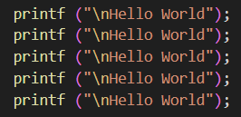
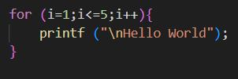 Berdasarkan contoh diatas, dapat dilihat bahwa, Ketika kita ingin mencetak tulisan “Hello World” sebanyak 5 kali, akan lebih efisien jika kita menggunakan perulangan untuk mencetaknya dibandingkan dengan menulis ulang kode yang sama sebanyak 5 kali.
1. Counted Loop (Perulangan Terhitung)
Perulangan yang sudah pasti dan sudah ditentukan sebelumnya berapa jumlah perulangan yang akan dijalankan oleh program.
2. Uncounted Loop (Perulangan Tidak Terhitung)
Secara umum, ada dua bagian struktur perulangan, yaitu:
1. Kondisi Perulangan: Ekspresi boolean yang harus dipenuhi untuk melaksanakan perulangan.
2. Badan Perulangan: Bagian algoritma yang diulang.
Struktur Perulangan disertai juga:
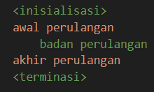 Struktur Perulangan Secara Umum
1. For Loop (Counted Loop)
Perulangan “For” merupakan perulangan yang termasuk dalam counted loop, hal ini karena jumlah perulangan yang akan dijalankan program sudah ditentukan dari awal.
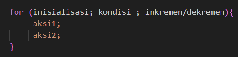 Struktur For Loop
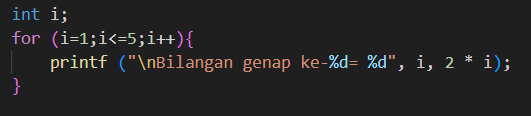 Contoh Penggunaan For Loop
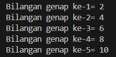 Output dari contoh penggunaan For Loop
2. While Loop (Uncounted Loop)
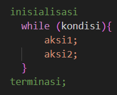 Struktur While Loop
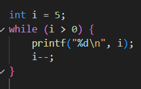 Contoh Penggunaan While Loop
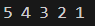 Output dari contoh penggunaan While Loop
3. Do-While Loop (Uncounted Loop)
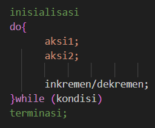 Struktur Do-While Loop
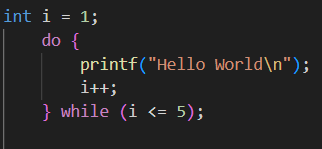 Contoh Penggunaan Do-While Loop
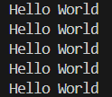 Output dari contoh penggunaan Do-While Loop Perulangan (Bagian 02)
5 Komentar
Komentar Pengguna
Mahasiswa Informatika
19-06-2024Kelvin deodorant
19-06-2024Verdi Tokyo Mokyo
20-06-2024Alfredo Pangsit
20-06-2024Kelvin Majapahit
22-06-2024Verdi Hime
23-06-2024